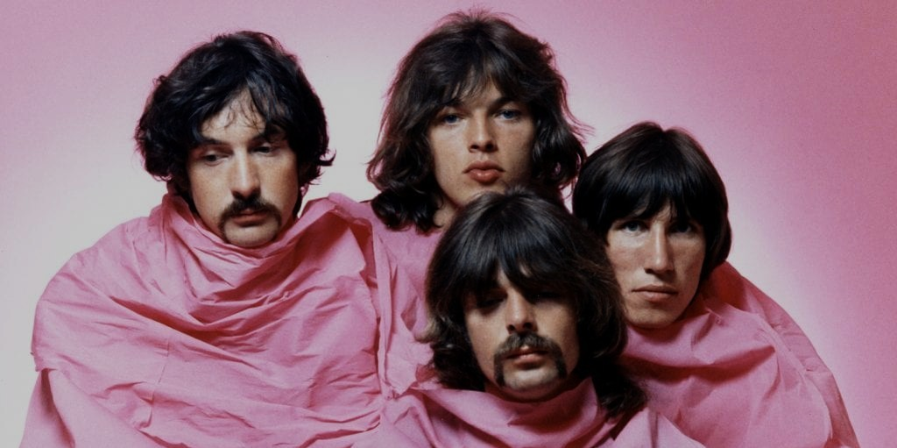
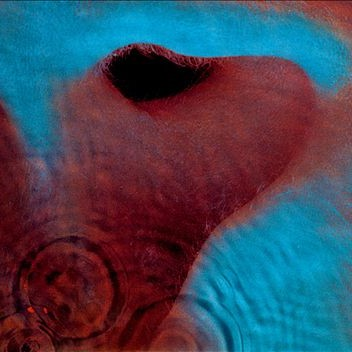
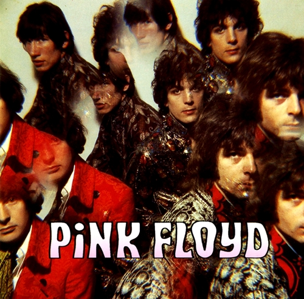

Pink Floyd
24,4M seguidores
Músicas Populares
- Money
- Another Brick In The Wall
- Time
- Monther
- High Hopes
Álbuns

Meddle

The Dark Side Of The Moon

The Piper At The Gates Of Dawn
Playlists
- Rock Classics
- Best of Pink Floyd
- 70s Rock Anthems
Sobre Pink Floyd
Pink Floyd foi uma banda britânica de rock formada em Londres em 1965. Ganhando seguidores como um grupo de rock psicodélico, eles se destacaram por suas composições longas, pela experimentação sonora, pelas letras filosóficas e pelas apresentações ao vivo criativas, o que levou a se tornarem uma banda líder do gênero do rock progressivo. Eles são um dos grupos mais bem-sucedidos comercialmente e influentes da história da música popular.